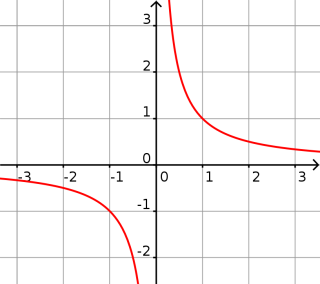

Définition : La fonction inverse est définie sur ℝ* par : $f(x)=\dfrac{1}{x}$.
Propriétés : La fonction inverse est impaire. Elle est décroissante sur $]\infty;0[$ et sur $]0;\infty[$.
Courbe :

Limites :
$\displaystyle{\lim_{x \to - \infty} \left( \frac{1}{x} \right) = 0}$
$\displaystyle{\lim_{x \to 0^{-}} \left( \frac{1}{x} \right) = - \infty}$
$\displaystyle{\lim_{x \to 0^{+}} \left( \frac{1}{x} \right) = + \infty}$
$\displaystyle{\lim_{x \to + \infty} \left( \frac{1}{x} \right) = 0 }$
Exemple 1 :
Soit $f_1(x)=2-\dfrac{1}{x}$.
Par soustraction : $\displaystyle{\lim_{x \to + \infty} f_1(x) = 2}$.
Exemple 2 :
Soit $f_2(x)=\dfrac{1}{x}+7$.
Par somme : $\displaystyle{\lim_{x \to 0^{-}} f_2(x) = - \infty}$.
Dérivée :
$f$ est dérivable sur ℝ* et :
$f'(x)=-\dfrac{1}{x^2}$.
Exemple 3 :
Soit $T_1$ la tangente à la courbe de la fonction cube
au point d'abscisse $1$ et $T_2$ au point d'abscisse $2$.
Le coefficient directeur de $T_1$ est $f'(1)=-\dfrac{1}{1^2} = -1$.
Le coefficient directeur de $T_2$ est $f'(2)=-\dfrac{1}{2^2} = -\dfrac{1}{4}$..